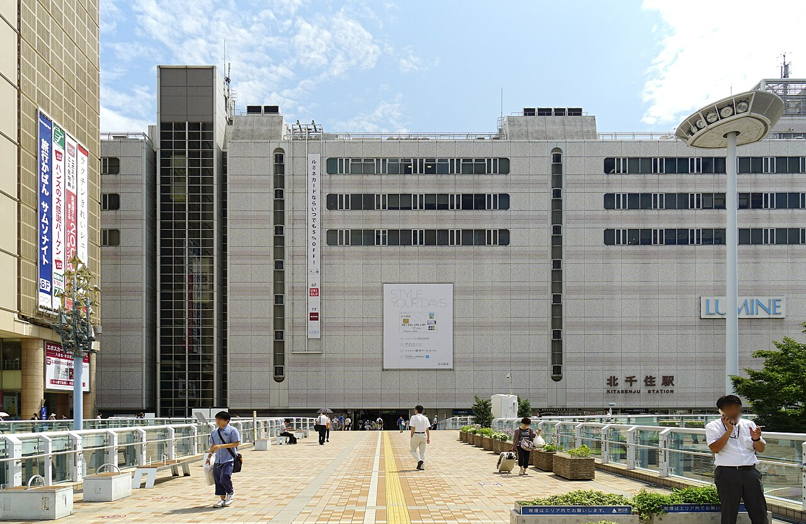
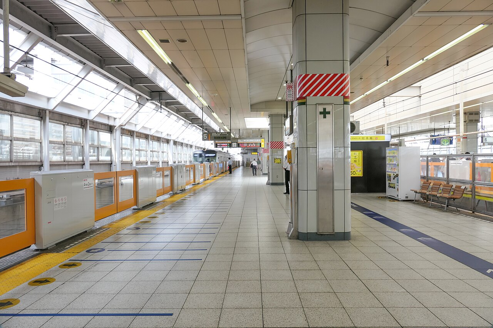

Reading Private Railway and Subway Maps

私鉄・地下鉄の路線図の読み方
Find the line, then the direction / 路線と方向を探す
Find your station and destination on the operator’s map. Match the line name as well as the colour: similar colours on different companies’ maps need not mean the same line. On subway signs, a code such as C02 identifies a station on a line, not a platform.
路線名と色を照合しましょう。駅番号はホーム番号ではありません。千代田線の代々木公園（C02）から明治神宮前（C03）へは、綾瀬方面です。

Check where the train stops / 列車が停まる駅を確認する
On a private railway’s stopping-pattern chart, find your station name and trace across to the row or column for your train type. Use the legend to check the stop symbol. For example, Minami-Shinjuku is next to Shinjuku on the Odakyu map, but an Express skips it. From Shinjuku, take a Local for that one-stop trip.
私鉄の停車駅案内では、駅名と列車種別が交わる位置の記号を凡例で確認します。小田急線で新宿から隣の南新宿へ行くときは、急行ではなく各駅停車に乗ります。
Look for a transfer or a through train / 乗り換えと直通列車を探す
Two lines crossing on paper is not enough: look for a marked interchange and the connecting line’s name. At Yoyogi-uehara, the Chiyoda Line meets Odakyu. Some trains continue onto the other operator’s tracks. If the departure board shows a through train for your stop, stay aboard; if the train terminates here, follow the transfer signs.
線の交差だけではなく、乗換駅の記号と接続路線名を確認しましょう。代々木上原では千代田線と小田急線が接続します。目的駅に停まる直通列車ならそのまま、当駅止まりなら乗り換えます。
 Your Guide Buddy / 旅の案内役
Your Guide Buddy / 旅の案内役